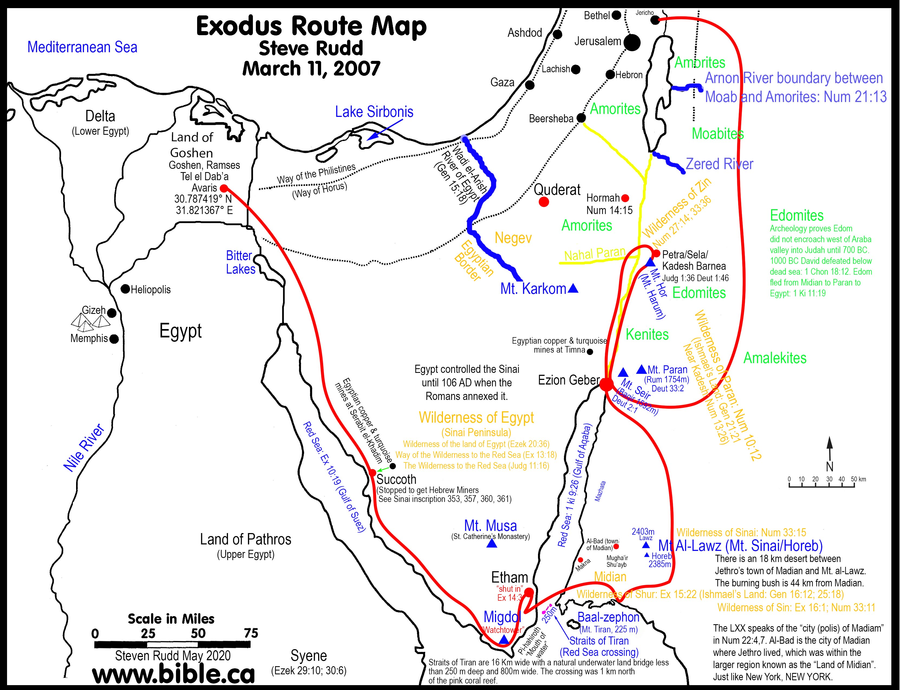

Provações no Deserto
Êxodo 16-18
⏳ Contexto Histórico
Período: ~1446 a.C. (Meses 2-3 - Primeiras Provações)
Após a travessia do Mar Vermelho, Israel enfrentou as duras realidades do deserto do Sinai. A região é caracterizada por vastas extensões de areia, rochas calcárias e wadis (leitos de rios secos). As temperaturas variam drasticamente: escaldantes durante o dia (até 45°C) e congelantes à noite.
Provisão Divina: O maná ("o que é isto?" em hebraico) era uma substância branca, semelhante a semente de coentro, que aparecia todas as manhãs. A água da rocha em Refidim demonstrou o poder de Deus sobre a natureza. A batalha contra os amalequitas introduziu Josué como líder militar e mostrou a importância da interceção (Moisés com as mãos levantadas).
Eventos Principais:
🗺️ Jornada pelo Deserto do Sinai
Rota de Israel desde o Mar Vermelho até o Monte Sinai, passando por Mara, Elim, Refidim e outros locais.

Fonte: Moses Bible Study - Exodus Route Appendix
Rota Completa: Sinai a Cades
Mapa detalhado mostrando as 22 paradas desde o Monte Sinai até os 38 anos em Cades-Barneia.

Fonte: Bible.ca - Exodus Route Archaeological Maps
Bloco 04: Provações no Deserto (Êxodo 16-18)
📜 Texto-base
Êxodo 16:1-36 (Maná e Codornizes)
Êxodo 17:1-7 (Água da Rocha)
Êxodo 17:8-16 (Batalha contra Amaleque)
Êxodo 18:1-27 (Conselho de Jetro)
🎯 Visão Geral do Bloco
Os capítulos 16 a 18 do livro de Êxodo narram um período crucial na jornada de Israel pelo deserto, após a libertação do Egito. Este bloco temático, intitulado "Provações no Deserto", detalha os desafios enfrentados pelo povo de Deus e as intervenções divinas que garantiram sua sobrevivência e organização. A narrativa se desenrola em meio a murmurações e testes de fé, revelando a natureza providente de Deus e a necessidade de dependência por parte de Israel. É um período de formação identitária para a nação recém-liberta, onde as lições sobre a fidelidade divina e a obediência humana são constantemente apresentadas. A transição da escravidão para a liberdade não foi isenta de dificuldades, e o deserto se tornou o palco para a educação teológica e prática de uma nação em formação, um verdadeiro laboratório de fé e caráter.
Central para este bloco é o tema da provisão divina, que se manifesta de maneiras espetaculares e pedagógicas, sublinhando a soberania e o cuidado de Deus. Em resposta à fome e à sede do povo, Deus milagrosamente envia o maná do céu e faz brotar água da rocha. Esses eventos não são meros atos de sustento físico, mas demonstrações pedagógicas da soberania de Deus sobre a criação e de seu cuidado paternal para com seu povo. O maná, um alimento misterioso e sobrenatural, é provido diariamente, com uma porção dobrada no sexto dia e a proibição de guardar para o dia seguinte, ensinando lições vitais sobre confiança, obediência, a santidade do sábado e a suficiência da provisão divina. A água da rocha, por sua vez, simboliza a fonte inesgotável de vida que Deus oferece, um lembrete de que Ele é capaz de suprir as necessidades mais básicas em ambientes inóspitos e que sua presença é a verdadeira fonte de refrigério. Esses milagres não apenas sustentaram fisicamente os israelitas, mas também serviram para gravar em suas mentes a realidade da presença e do poder de Deus em suas vidas, moldando sua compreensão de quem Ele é e de quem eles são em relação a Ele.
Além da provisão, este bloco aborda a proteção divina e a organização social e judicial do povo, elementos essenciais para a consolidação de uma nação. A batalha contra Amaleque em Refidim destaca a necessidade de intervenção divina na guerra e a importância da intercessão. A vitória de Israel não é atribuída à sua própria força militar, mas à elevação das mãos de Moisés, simbolizando a dependência total de Deus para o sucesso e a compreensão de que as batalhas espirituais são vencidas com armas espirituais. Este episódio estabelece um precedente para a compreensão da guerra santa e da soberania de Deus sobre os inimigos de seu povo, demonstrando que Ele é o verdadeiro guerreiro de Israel. Posteriormente, o conselho de Jetro a Moisés sobre a delegação de responsabilidades judiciais e administrativas introduz princípios de governança e liderança que seriam fundamentais para a estrutura da nação. Este episódio sublinha a sabedoria prática, a importância de uma liderança eficaz e distribuída, e a necessidade de sistemas justos para a manutenção da ordem e da paz na comunidade, refletindo a ordem divina.
Em suma, Êxodo 16-18 é um testemunho eloquente da contínua presença e providência de Deus em meio às adversidades. Ele estabelece padrões para a relação de aliança entre Deus e Israel, enfatizando a graça divina, a necessidade de adoração e a revelação progressiva do Reino de Deus. As provações no deserto servem como um cadinho para forjar a fé e a identidade de Israel, preparando-os para os desafios futuros e para a recepção da Lei no Sinai. Este período é, portanto, um microcosmo das verdades teológicas que permeiam toda a história da redenção, demonstrando que Deus é fiel para sustentar, proteger e guiar seu povo, mesmo quando este falha em sua fidelidade. A experiência do deserto, com suas dificuldades e milagres, foi essencial para a formação do caráter de Israel como nação eleita de Deus, ensinando-lhes que a verdadeira liberdade e segurança são encontradas apenas em sua dependência d'Ele.
📖 Contexto Histórico e Cultural
O período do Êxodo, conforme narrado em Êxodo 16-18, situa-se historicamente no contexto do Novo Reino do Egito, que abrange aproximadamente 1550 a 1070 a.C. [1]. Durante esta era, o Egito era uma potência dominante no Antigo Oriente Próximo, caracterizado por um império vasto, uma burocracia complexa e uma cultura rica em rituais religiosos e práticas sociais. Faraós como Tutmés III, Amenófis II e Ramsés II são frequentemente associados a este período, e a capacidade do Egito de mobilizar grandes contingentes de mão de obra para projetos de construção, como cidades-armazéns (Êxodo 1:11), é bem documentada. A ausência de registros egípcios diretos sobre o Êxodo tem sido um ponto de debate arqueológico, mas isso não invalida a narrativa bíblica, que pode ser interpretada à luz de lacunas nos registros, da perspectiva dos escribas egípcios que raramente registravam derrotas, ou da natureza da tradição oral antes da escrita [2]. A hegemonia egípcia na região do Sinai e Canaã durante o Novo Reino é um fator importante a ser considerado, pois influencia a rota e os desafios enfrentados pelos israelitas. A vida sob o domínio egípcio, com sua hierarquia social rígida e a adoração a um panteão de deuses, contrastava drasticamente com a identidade que Deus estava forjando para Israel.
A jornada dos israelitas pelo deserto do Sinai, após a saída do Egito, é marcada por uma transição abrupta de um ambiente de escravidão e cultura egípcia para a formação de uma identidade nacional e religiosa própria. As práticas culturais egípcias, como a adoração a múltiplos deuses (politeísmo), a crença na vida após a morte com elaborados rituais funerários, a mumificação e a construção de templos grandiosos, contrastavam fortemente com o monoteísmo emergente de Israel e a ênfase na aliança com Yahweh. No deserto, os israelitas começam a desenvolver suas próprias práticas e leis, embora ainda carregassem influências e memórias do Egito, como evidenciado pelas suas constantes murmurações e o desejo nostálgico de retornar à "panela de carne" e aos "peixes do Egito" (Êxodo 16:3; Números 11:5). Essa transição cultural e religiosa é um tema subjacente a todo o período do deserto, onde Deus busca purificar e moldar seu povo para uma nova forma de vida e adoração, desvinculando-os das mentalidades e dependências do Egito.
A geografia desempenha um papel crucial na narrativa, servindo como um cenário para as provações e a provisão divina. A rota do Êxodo, embora não totalmente consensual entre os estudiosos, geralmente aponta para a travessia do Mar Vermelho (ou Mar de Juncos) e a subsequente jornada pela Península do Sinai. O deserto de Sim (Êxodo 16:1) e Refidim (Êxodo 17:1, 8) são locais específicos mencionados, onde os eventos de provisão de maná e água, e a batalha contra Amaleque, respectivamente, ocorreram. O Sinai é um ambiente árido, inóspito e desafiador, o que intensifica a dependência de Israel da provisão divina e serve como um cadinho para o desenvolvimento de sua fé e resiliência. A menção de Horebe (Êxodo 17:6) como o local onde Moisés feriu a rocha é frequentemente associada ao Monte Sinai, o que sublinha a proximidade dos eventos com o local da revelação da Lei e a formação da aliança. A paisagem desértica, com sua escassez de recursos, força o povo a olhar para Deus como sua única fonte de sustento, ensinando-lhes que a verdadeira segurança não reside em bens materiais, mas na fidelidade do Criador.
A arqueologia tem contribuído para o entendimento do contexto do Êxodo, embora não haja evidências diretas e inequívocas que comprovem a narrativa bíblica em todos os seus detalhes. Descobertas como fortalezas egípcias no Sinai, datadas do Novo Reino, indicam a presença egípcia na região e rotas comerciais que poderiam ter sido utilizadas, fornecendo um pano de fundo para a mobilidade de grandes grupos [3]. O Papiro de Ipuwer, embora não seja uma descrição do Êxodo, é por vezes citado por descrever calamidades que guardam semelhanças com as pragas, sugerindo um pano de fundo de instabilidade no Egito antigo que poderia ter facilitado a saída de um grupo de escravos [4]. No entanto, a maioria dos egiptólogos e historiadores não encontra evidências diretas do Êxodo em documentos egípcios, o que leva a diferentes interpretações sobre a historicidade e a natureza da narrativa bíblica [5]. A arqueologia, portanto, oferece um pano de fundo para a compreensão do mundo em que o Êxodo ocorreu, mas a fé na narrativa bíblica muitas vezes transcende a necessidade de validação arqueológica direta, baseando-se na revelação divina e na tradição. A busca por evidências arqueológicas continua, e novas descobertas podem sempre lançar mais luz sobre este período crucial, enriquecendo nossa compreensão do cenário histórico sem necessariamente provar cada detalhe da narrativa bíblica.
Referências
[1] National Geographic. O Êxodo: do Egipto à Terra Prometida. Disponível em: https://www.nationalgeographic.pt/historia/exodo-egipto-terra-prometida-mito-fundaco-israel-judaismo_6133
[2] Arqueologia Egípcia. Êxodo hebreu no Egito: aconteceu ou não?. Disponível em: https://arqueologiaegipcia.com.br/2011/04/24/exodo-hebreu-no-egito-aconteceu-ou-nao/
[3] Revista Fórum. Nova descoberta de 3,5 mil anos pode mudar a forma como lemos a Bíblia. Disponível em: https://revistaforum.com.br/global/nova-descoberta-de-35-mil-anos-pode-mudar-a-forma-como-lemos-a-biblia/
[4] Reddit. O Papiro de Ipuwer & a Narrativa do Êxodo: Eco Histórico ou.... Disponível em: https://www.reddit.com/r/egyptology/comments/1khsikt/the_ipuwer_papyrus_the_exodus_narrative/?tl=pt-br
[5] Teologia Brasileira. O êxodo bíblico e a magia da escrita na perspectiva de Gerald Wheeler. Disponível em: https://teologiabrasileira.com.br/o-exodo-biblico-e-a-magia-da-escrita-na-perspectiva-de-gerald-wheeler-uma-tentativa-de-responder-ao-problema-da-ausencia-de-evidencia/
🔍 Exposição do Texto
O Maná e as Codornizes (Êxodo 16)
Após a travessia do Mar Vermelho e a experiência das águas amargas de Mara, os israelitas chegam ao deserto de Sim, onde a falta de alimento se torna uma nova e intensa fonte de murmuração contra Moisés e Arão (Êxodo 16:2-3). Esta murmuração não é apenas uma queixa por comida, mas um questionamento profundo da liderança de Moisés e, implicitamente, da fidelidade e capacidade de Deus em sustentar seu povo. A memória das "panelas de carne" do Egito (Êxodo 16:3) revela uma nostalgia pela escravidão que, embora opressora, garantia o sustento. A resposta divina a essa crise de fé e fome é a provisão milagrosa de maná e codornizes, demonstrando a paciência e a soberania de Deus.
O maná, descrito como "coisa miúda, semelhante à geada sobre a terra" (Êxodo 16:14), era um alimento desconhecido para os israelitas, o que é refletido na própria etimologia da palavra. Em hebraico, a pergunta "Man hu?" (מָן הוּא), que significa "Que é isto?", deu origem ao nome "maná" (Êxodo 16:15). Este evento não é apenas um ato de sustento físico, mas uma lição teológica profunda sobre a dependência diária de Deus e a obediência aos seus mandamentos. A instrução de colher apenas o suficiente para o dia, exceto no sexto dia para o sábado, ensina sobre confiança na provisão contínua de Deus, a santidade do descanso sabático e a provisão sobrenatural de Deus (Êxodo 16:4-5, 22-26). A desobediência a essas instruções resultava na deterioração do maná, reforçando a necessidade de obediência e confiança (Êxodo 16:19-20). Comentaristas como John Durham destacam a natureza pedagógica do maná, que visava moldar o caráter de Israel, ensiná-los a viver pela palavra de Deus, e não apenas de pão, e prepará-los para a Lei que seria dada no Sinai [6]. A estrutura literária deste capítulo enfatiza o contraste entre a incredulidade e a rebelião do povo e a fidelidade e a graça de Deus, culminando na instituição de uma prática que os lembraria diariamente de sua dependência divina e da importância da obediência. O maná, portanto, não era apenas alimento, mas um símbolo tangível da aliança e da presença de Deus no meio de seu povo.
Água da Rocha (Êxodo 17:1-7)
A jornada continua para Refidim, um local que, como o deserto de Sim, se revela um cenário de provação e teste para a fé de Israel. A falta de água provoca uma nova e intensa murmuração, levando o povo a contender com Moisés (Êxodo 17:1-3). A intensidade da queixa do povo é notável, chegando ao ponto de questionar a própria presença de Deus entre eles: "Está o Senhor no meio de nós, ou não?" (Êxodo 17:7). Esta pergunta retórica revela uma profunda crise de fé e uma memória curta das intervenções divinas recentes. A resposta de Deus a essa crise, que poderia ter sido de juízo, é novamente um milagre de provisão, demonstrando sua soberania, misericórdia e paciência inesgotável.
Moisés é instruído a ferir uma rocha em Horebe com sua vara, a mesma vara que realizou os milagres no Egito e abriu o Mar Vermelho, e dela brota água em abundância para todo o povo (Êxodo 17:5-6). Este evento é carregado de profundo simbolismo teológico. A rocha, que parece inerte, estéril e incapaz de vida, torna-se a fonte de sustento vital pela intervenção divina, sublinhando que Deus pode operar milagres mesmo nas circunstâncias mais improváveis e que sua provisão transcende as leis naturais. O nome dado ao lugar, Massá (מַסָּה, massah, "tentação" ou "prova") e Meribá (מְרִיבָה, meribah, "contenda"), reflete a atitude de incredulidade e desafio do povo para com Deus, servindo como um memorial duradouro de sua falta de fé e da sua tendência a testar a paciência divina (Êxodo 17:7). Douglas Stuart, em seus comentários, enfatiza que a paciência de Deus com seu povo, apesar de suas constantes queixas e testes, demonstra sua graça e fidelidade inabalável à aliança, um testemunho do seu amor pactual [7]. Além disso, a rocha ferida é um tipo cristológico poderoso, apontando para Cristo como a fonte de água viva que sacia a sede espiritual da humanidade (1 Coríntios 10:4; João 4:10-14). A água que flui da rocha simboliza o Espírito Santo e a vida abundante que Ele concede, prefigurando a nova aliança e a provisão espiritual em Cristo.
Batalha contra Amaleque (Êxodo 17:8-16)
Em Refidim, os israelitas enfrentam seu primeiro inimigo militar, os amalequitas, um povo nômade e agressivo, descendentes de Esaú. Esta batalha não é apenas um confronto físico por território ou recursos, mas um teste crucial da confiança de Israel na proteção divina e uma revelação da natureza da guerra santa. Moisés instrui Josué, que aqui faz sua primeira aparição proeminente como líder militar, a liderar o exército, enquanto ele, Arão e Hur sobem ao cume do outeiro para observar e interceder. A narrativa enfatiza que a vitória de Israel está diretamente ligada à elevação das mãos de Moisés: quando suas mãos estavam levantadas, Israel prevalecia; quando abaixadas, Amaleque vencia (Êxodo 17:11). Este detalhe não é meramente descritivo, mas profundamente teológico, sublinhando a importância da intercessão, da dependência total de Deus na guerra espiritual e física, e a necessidade de uma liderança espiritual que se mantenha firme na fé. A intervenção de Arão e Hur, que sustentam as mãos de Moisés, demonstra a importância da comunidade, do apoio mútuo e da solidariedade na obra de Deus, mostrando que a liderança não é um fardo solitário.
A ordem de Deus para que a memória de Amaleque fosse apagada de debaixo do céu (Êxodo 17:14) e a construção de um altar chamado "O Senhor é minha Bandeira" (יהוה נִסִּי, Yahweh Nissi) (Êxodo 17:15) demonstram a natureza teocrática da batalha e a soberania de Deus sobre os inimigos de seu povo. Amaleque, ao atacar Israel de surpresa e covardemente, visando os mais fracos e exaustos (Deuteronômio 25:17-18), torna-se um símbolo da oposição implacável e traiçoeira ao povo de Deus e ao seu plano redentor. Brevard Childs destaca a singularidade desta batalha como um prelúdio para a guerra santa de Israel, onde a intervenção divina é o fator decisivo, e não a superioridade militar humana ou a estratégia de batalha [8]. A construção do altar serve como um memorial perpétuo da vitória concedida por Deus e um lembrete para todas as gerações de que Ele é o estandarte, a força e o protetor de seu povo. A promessa de Deus de lutar contra Amaleque de geração em geração (Êxodo 17:16) sublinha a natureza contínua do conflito entre o reino de Deus e as forças do mal.
O Conselho de Jetro (Êxodo 18)
O capítulo 18 apresenta a visita de Jetro, sogro de Moisés e sacerdote de Midiã, que traz a esposa e os filhos de Moisés para se reunirem com ele no deserto. Jetro, ao ouvir sobre os grandes feitos de Deus em favor de Israel – a libertação do Egito, a travessia do Mar Vermelho e a provisão no deserto – "bendisse ao Senhor" e reconheceu a superioridade de Yahweh sobre todos os deuses (Êxodo 18:9-12). Este reconhecimento de um não-israelita é teologicamente significativo, apontando para a universalidade da soberania de Deus e a capacidade de Deus de se revelar a todos os povos, mesmo aqueles fora da aliança formal com Israel. A adoração de Jetro a Yahweh e sua oferta de sacrifícios (Êxodo 18:12) demonstram uma fé genuína e um reconhecimento da singularidade do Deus de Israel.
Observando Moisés julgando o povo do amanhecer ao anoitecer, Jetro percebe a insustentabilidade e a ineficiência dessa prática. Ele questiona a sabedoria de Moisés em carregar sozinho um fardo tão pesado, que estava exaurindo tanto a ele quanto ao povo (Êxodo 18:17-18). Jetro, então, oferece um conselho sábio e prático, fundamentado em princípios de boa governança e delegação. Ele sugere que Moisés selecione homens capazes, tementes a Deus, homens de verdade e que aborreçam a avareza, para serem chefes de mil, de cem, de cinquenta e de dez. Esses homens julgariam as causas menores, enquanto Moisés se concentraria nas questões maiores e no ensino da lei e dos estatutos de Deus (Êxodo 18:19-26). Este evento é crucial para a organização administrativa de Israel, estabelecendo um sistema judicial hierárquico que alivia o fardo de Moisés e garante uma justiça mais acessível e eficiente para o povo. A estrutura literária do capítulo enfatiza a sabedoria de Jetro, um não-israelita, e a humildade de Moisés em aceitar o conselho, demonstrando que a sabedoria pode vir de fontes inesperadas e que a liderança eficaz envolve a capacidade de ouvir, delegar e reconhecer os próprios limites. Teologicamente, este episódio demonstra a importância da liderança distribuída, da justiça e da eficiência na governança do povo de Deus, preparando-o para a vida em sociedade e para a recepção da Lei. A aceitação do conselho de Jetro por Moisés não diminui sua autoridade, mas a fortalece, permitindo que ele se concentre em sua vocação principal de mediador da aliança e de instrutor da vontade divina, garantindo assim a sustentabilidade da liderança e a saúde da comunidade.
Referências
[6] Durham, John I. Word Biblical Commentary, Vol. 3: Exodus. Word Books, 1987.
[7] Stuart, Douglas K. Exodus. The New American Commentary, Vol. 2. Broadman & Holman Publishers, 2006.
[8] Childs, Brevard S. The Book of Exodus: A Critical, Theological Commentary. Westminster John Knox Press, 1974.
💭 As Três Perguntas
Onde estava a graça?
A graça de Deus se manifesta de forma proeminente em Êxodo 16-18, revelando um aspecto fundamental do caráter divino em meio às constantes murmurações e incredulidade do povo. A provisão do maná e da água da rocha são atos de graça soberana e imerecida. Deus não estava obrigado a sustentar um povo rebelde e ingrato, que repetidamente questionava sua liderança e sua presença, mas o fez por sua fidelidade inabalável à aliança que havia estabelecido com Abraão, Isaque e Jacó, e por seu amor incondicional. O maná, em particular, é um símbolo vívido da graça diária, um lembrete constante de que a vida e o sustento de Israel dependiam inteiramente da bondade divina. A instrução de colher apenas o suficiente para o dia, exceto no sexto dia para o sábado, era uma lição prática de confiança na provisão contínua de Deus, um exercício de fé na graça que se renova a cada manhã, ensinando-os a viver um dia de cada vez sob a dependência divina. Esta disciplina de coleta e a proibição de guardar o maná para o dia seguinte (com exceção do sábado) serviam para combater a ansiedade e a acumulação, fomentando uma mentalidade de dependência e gratidão.
Mesmo diante da contenda em Refidim, onde o povo questionou abertamente a presença de Deus entre eles, chegando a dizer: "Está o Senhor no meio de nós, ou não?" (Êxodo 17:7), a resposta divina não foi de juízo imediato, mas de provisão graciosa e paciente. A água que jorrou da rocha ferida não apenas saciou a sede física de milhões de pessoas e seus rebanhos, mas também serviu como um testemunho inegável da paciência e misericórdia de Deus. A graça se manifesta na disposição de Deus em continuar a guiar, proteger e sustentar seu povo, apesar de suas falhas repetidas, sua memória curta e sua tendência à rebelião. É um reflexo do caráter intrínseco de Deus, que é "compassivo e misericordioso, tardio em irar-se e grande em benignidade e fidelidade" (Êxodo 34:6), uma declaração que se tornaria um credo fundamental para Israel.
A vitória sobre Amaleque em Refidim também é um testemunho poderoso da graça de Deus. Israel não venceu pela sua própria força militar, que era inexperiente e desorganizada, mas pela intervenção divina mediada pela intercessão persistente de Moisés. A elevação das mãos de Moisés, sustentadas por Arão e Hur, simboliza a dependência total de Israel da graça e do poder de Deus para superar seus inimigos. Esta vitória não foi conquistada por mérito humano, mas pela graça que capacita e protege. A graça de Deus não apenas provê as necessidades básicas para a sobrevivência, mas também concede vitória e proteção em face de ameaças existenciais e ataques hostis. O conselho de Jetro, embora vindo de um não-israelita, é também um ato de graça providencial, pois Deus usa um homem sábio de fora da aliança para trazer ordem e justiça à comunidade, aliviando o fardo de Moisés e promovendo o bem-estar e a sustentabilidade do povo. A graça de Deus, portanto, permeia todos os aspectos da experiência de Israel no deserto, desde o sustento físico até a vitória militar e a organização social.
Como era a adoração?
Em Êxodo 16-18, a adoração de Israel ainda está em um estágio incipiente e muitas vezes reativa, caracterizada por uma tensão entre a memória da escravidão e a experiência da liberdade e provisão divina. Em vez de louvor e gratidão espontâneos, a adoração se manifesta inicialmente através de murmurações e queixas. Essas murmurações, embora pecaminosas e reveladoras de uma falta de fé, são paradoxalmente uma forma distorcida de reconhecimento da soberania de Deus, pois é a Ele que o povo, através de Moisés, dirige suas demandas por sustento. A resposta de Deus a essas queixas, com a provisão milagrosa do maná e da água, serve para direcionar a adoração do povo para a sua providência e fidelidade. A obediência às instruções sobre a coleta do maná, especialmente a observância do sábado, torna-se um ato de adoração prático, um reconhecimento da autoridade de Deus sobre o tempo e o sustento, e uma demonstração de confiança em sua palavra.
A batalha contra Amaleque em Êxodo 17 oferece um vislumbre mais explícito de adoração através da intercessão e do reconhecimento da soberania divina na guerra. A elevação das mãos de Moisés no outeiro, acompanhada pela sustentação de Arão e Hur, é um ato de adoração que invoca o poder de Deus para a vitória. Este ato não é um ritual vazio, mas uma expressão de total dependência do poder divino. A construção do altar "O Senhor é minha Bandeira" (יהוה נִסִּי, Yahweh Nissi) (Êxodo 17:15) é um ato de adoração memorial e confessional, um reconhecimento público de que a vitória pertence ao Senhor e que Ele é o estandarte e a força de seu povo. Este altar serve como um ponto focal para a memória da intervenção divina e um lembrete para as futuras gerações da fidelidade de Deus em proteger seu povo. A adoração aqui é corporativa e sacrificial, não no sentido de sacrifícios de animais, mas no reconhecimento da dependência total de Deus e na celebração de sua vitória.
O encontro com Jetro em Êxodo 18 também contém elementos significativos de adoração. Jetro, um sacerdote de Midiã e, portanto, um não-israelita, ao ouvir sobre os grandes feitos de Deus em favor de Israel, "bendisse ao Senhor" e ofereceu sacrifícios e holocaustos a Deus (Êxodo 18:10-12). Este é um momento teologicamente rico, pois um estrangeiro reconhece e adora o Deus de Israel, demonstrando a universalidade da soberania divina e a atração que os atos de Deus exercem sobre aqueles que o observam. A refeição compartilhada entre Moisés, Arão, os anciãos de Israel e Jetro "diante de Deus" (Êxodo 18:12) é um ato de comunhão e adoração, celebrando a bondade e o poder de Deus em um contexto de aliança e hospitalidade. A adoração neste bloco, portanto, evolui de murmurações reativas para atos de obediência prática, intercessão fervorosa, reconhecimento público da soberania divina e comunhão celebratória, todos apontando para a crescente compreensão da grandeza e fidelidade de Yahweh por parte de Israel e até mesmo de estrangeiros.
O que foi revelado sobre o Reino de Deus?
Os eventos de Êxodo 16-18 oferecem revelações significativas sobre a natureza e os princípios do Reino de Deus, mesmo antes da formalização da aliança no Sinai. Primeiramente, a provisão milagrosa de maná e água demonstra a soberania de Deus sobre a criação e sua capacidade de sustentar seu povo em qualquer circunstância. O Reino de Deus é um reino onde o Rei é o provedor supremo, aquele que cuida das necessidades básicas de seus súditos de maneira sobrenatural. Esta provisão não é apenas um ato de bondade, mas uma demonstração de que o Reino de Deus opera com base em princípios divinos, que transcendem as limitações dos recursos humanos ou naturais. A dependência diária do maná ensina que a vida no Reino é uma vida de confiança absoluta e submissão à vontade do Rei, reconhecendo que toda a subsistência vem d'Ele. A provisão abundante e constante reforça a ideia de que o Reino de Deus é um reino de fartura para aqueles que confiam em seu Rei.
Em segundo lugar, a batalha contra Amaleque revela o aspecto de proteção e justiça do Reino de Deus. A vitória não é alcançada pela força militar de Israel, que era incipiente, mas pela intervenção divina mediada pela intercessão de Moisés. Isso estabelece um princípio fundamental do Reino: a batalha pertence ao Senhor. Deus é o guerreiro divino que luta por seu povo e estabelece justiça contra aqueles que se opõem a Ele e ao seu plano redentor. A ordem de apagar a memória de Amaleque (Êxodo 17:14) sublinha a seriedade da oposição ao Reino de Deus e a certeza do juízo divino contra o mal e aqueles que atacam seu povo. O Reino de Deus é, portanto, um reino onde a justiça prevalece, os inimigos são derrotados e a segurança de seus súditos é garantida pela mão poderosa do Rei.
Finalmente, o conselho de Jetro a Moisés sobre a organização judicial (Êxodo 18) ilustra os princípios de governança e ordem no Reino de Deus. Embora o conselho venha de um não-israelita, ele é divinamente inspirado e aceito por Moisés, demonstrando que a sabedoria e a boa governança são valorizadas e incorporadas no Reino. A delegação de autoridade e a criação de uma estrutura judicial hierárquica visam garantir que a justiça seja acessível a todos, que os conflitos sejam resolvidos de forma eficiente e que o povo seja governado de forma eficaz e justa. Isso aponta para um Reino de Deus que é bem-ordenado, justo e profundamente preocupado com o bem-estar de seus cidadãos, onde a liderança é exercida com sabedoria, integridade e uma clara compreensão da vontade divina. Esses eventos, portanto, prefiguram a natureza do Reino de Deus como um reino de provisão abundante, proteção inabalável, justiça impecável e boa governança para a glória de seu Rei.
🧠 Reflexão Teológica
Os eventos de Êxodo 16-18 são ricos em implicações teológicas que ressoam através de toda a narrativa bíblica, servindo como um fundamento para diversas doutrinas cristãs e judaicas. A Teologia Sistemática encontra nestes capítulos pilares para a doutrina da Providência Divina, que se manifesta de forma palpável no cuidado constante de Deus para com seu povo. A provisão do maná e da água da rocha não são meros eventos isolados, mas demonstrações contínuas da soberania de Deus sobre a criação e de seu compromisso em suprir as necessidades físicas de Israel, protegendo-os de seus inimigos e guiando-os em sua jornada. A murmuração de Israel, por outro lado, sublinha a doutrina da pecaminosidade humana e a necessidade de uma redenção contínua, não apenas da escravidão física do Egito, mas também da escravidão do coração, que se manifesta na incredulidade e na ingratidão. A fidelidade inabalável de Deus em meio à infidelidade persistente de Israel reforça a natureza incondicional da Aliança que Ele estabeleceu, demonstrando que sua graça precede e sustenta a obediência humana, e que seu amor e compromisso não dependem do mérito humano. A Santidade de Deus é revelada na sua exigência de obediência (como na coleta do maná e na observância do sábado) e na sua resposta ao pecado, mesmo que temperada com misericórdia e paciência, visando a santificação de seu povo. A teologia do deserto, portanto, é uma teologia da dependência e da formação do caráter.
A Cristologia é profundamente prefigurada nestes capítulos, que servem como ricos tipos e sombras da pessoa e obra de Jesus Cristo. O maná do céu é um tipo claro de Cristo, o "pão da vida" que desceu do céu para dar vida ao mundo (João 6:32-35). Assim como o maná sustentou Israel fisicamente no deserto, Cristo sustenta espiritualmente seu povo, sendo a fonte de toda a vida e nutrição espiritual. A água que jorrou da rocha ferida em Horebe aponta para Cristo como a "rocha espiritual" que acompanhava Israel e da qual bebiam (1 Coríntios 10:4). Cristo é a fonte de água viva que sacia a sede espiritual de todos os que creem (João 4:10-14; 7:37-38), oferecendo vida eterna e refrigério para a alma. A batalha contra Amaleque, onde a vitória dependia das mãos levantadas de Moisés, pode ser vista como uma prefiguração da intercessão contínua de Cristo, nosso sumo sacerdote, que intercede por nós no céu, garantindo nossa vitória espiritual sobre o pecado, a morte e o diabo. A elevação das mãos de Moisés, que prefigura a elevação de Cristo na cruz, é o meio pelo qual a salvação e a vitória são alcançadas, não por mérito próprio, mas pela obra substitutiva de Cristo.
O Plano de Redenção é avançado significativamente neste bloco, que marca uma fase crucial na formação de Israel como nação. A libertação do Egito foi apenas o primeiro passo; a jornada pelo deserto é um período de purificação, disciplina e formação, preparando Israel para ser uma nação santa, um reino de sacerdotes e uma luz para as nações. As provações servem para revelar a Deus o coração do povo, testando sua fé e obediência, e para revelar ao povo a sua própria fraqueza e a suficiência absoluta de Deus. A provisão e proteção divinas são elementos essenciais do plano de Deus para redimir um povo para si, estabelecendo-o em uma terra prometida e, através dele, abençoar todas as nações da terra. Este período de deserto é um microcosmo da jornada de fé de cada crente, onde a dependência de Deus é testada, aprofundada e fortalecida, e onde a graça de Deus se manifesta de forma poderosa para levar seu povo ao destino final, a plena comunhão com Ele.
Temas teológicos maiores como a Soberania de Deus, a Fidelidade Divina e a Natureza da Aliança são proeminentemente exibidos e reforçados. Deus demonstra sua soberania absoluta sobre a natureza (ao prover maná e água de forma milagrosa) e sobre os inimigos (ao conceder vitória sobre Amaleque), reafirmando seu controle sobre todas as coisas. Sua fidelidade à sua promessa a Abraão, Isaque e Jacó é evidente em seu cuidado contínuo por Israel, apesar de suas falhas e rebeliões, provando que Ele é um Deus que cumpre sua palavra. A aliança, embora ainda não formalizada no Sinai com a entrega da Lei, está sendo vivida e testada, mostrando que Deus é um Deus que cumpre suas promessas e que espera uma resposta de fé e obediência de seu povo. O conselho de Jetro, por sua vez, introduz a importância da sabedoria prática e da boa governança como reflexos do caráter de Deus e como elementos essenciais para a saúde, a ordem e a sustentabilidade da comunidade da aliança. A estrutura judicial proposta por Jetro é um exemplo de como os princípios divinos de justiça e ordem devem ser aplicados na vida prática do povo de Deus, garantindo a coesão social e a manifestação do Reino na terra.
💡 Aplicação Prática
Os eventos de Êxodo 16-18 oferecem ricas e perenes aplicações para a vida contemporânea, tanto no âmbito pessoal quanto coletivo, transcendendo as barreiras do tempo e da cultura. Para a vida pessoal, a provisão do maná e da água da rocha nos lembra da importância vital da confiança diária em Deus. Em um mundo que frequentemente valoriza a autossuficiência, o planejamento a longo prazo e o acúmulo de bens, a lição do maná nos desafia a depender de Deus para o nosso sustento diário, a buscar o "pão de cada dia" e a não nos preocuparmos excessivamente com o amanhã (Mateus 6:34). As constantes murmurações de Israel servem como um alerta contra a ingratidão, a incredulidade e a tendência humana de esquecer as bênçãos passadas, incentivando-nos a cultivar uma atitude de gratidão e contentamento em todas as circunstâncias, reconhecendo a mão de Deus em nossa provisão. A intercessão de Moisés na batalha contra Amaleque destaca o poder transformador da oração e a necessidade de buscar a Deus em momentos de luta pessoal, reconhecendo que nossas vitórias dependem mais da intervenção divina do que de nossa própria força.
Para a Igreja, este bloco de Êxodo sublinha a responsabilidade de ser um povo que confia na provisão de Deus e que pratica a intercessão de forma contínua. A igreja, como o novo Israel, é chamada a ser um corpo que se alimenta de Cristo, o verdadeiro pão da vida, e que bebe da água viva que Ele oferece, encontrando n'Ele a sua suficiência. A organização judicial proposta por Jetro a Moisés oferece princípios valiosos para a governança e liderança eclesiástica, enfatizando a importância da delegação de tarefas, da formação e capacitação de líderes capazes, tementes a Deus, íntegros e que busquem a justiça e a equidade dentro da comunidade de fé. Isso não apenas evita o esgotamento dos líderes principais, mas também garante que as necessidades do rebanho sejam atendidas de forma mais eficaz e que a justiça seja administrada de maneira acessível a todos os membros.
Na sociedade e em relação a questões contemporâneas, os temas de Êxodo 16-18 ressoam de diversas maneiras, oferecendo insights para desafios modernos. A provisão de maná e água pode ser interpretada como um chamado urgente à justiça social e à distribuição equitativa de recursos. Em um mundo onde a fome, a escassez e a desigualdade ainda são realidades gritantes para milhões, a história do maná nos desafia a considerar como a sociedade pode trabalhar para garantir que todos tenham o suficiente para viver com dignidade, sem permitir o acúmulo excessivo por parte de poucos em detrimento de muitos. A batalha contra Amaleque, embora contextualizada em um conflito antigo, pode ser vista como uma metáfora para as lutas contínuas contra as injustiças, opressões e sistemas de maldade em nossa sociedade, lembrando-nos que a vitória final pertence a Deus e que a intercessão, a solidariedade e a ação justa são essenciais para a transformação social. O conselho de Jetro, por sua vez, oferece um modelo atemporal para a boa governança e a importância de sistemas judiciais justos, transparentes e eficientes, que busquem o bem-estar de todos os cidadãos, evitem a sobrecarga de poucos e promovam a ordem e a paz social. A sabedoria de Jetro nos lembra que a boa administração é um reflexo dos princípios divinos e é fundamental para a saúde de qualquer nação.
📚 Para Aprofundar
Para aprofundar o estudo de Êxodo 16-18, considere os seguintes tópicos e conexões com outros textos bíblicos:
- O Maná como Tipo de Cristo: Aprofunde-se em João 6, onde Jesus se apresenta como o verdadeiro pão da vida, superior ao maná que perece no deserto. Compare as características do maná (provisão diária, perecível, dado no deserto) com as de Cristo (provisão eterna, vida abundante, sustento espiritual). Considere como o maná prefigurava a encarnação e a obra redentora de Jesus.
- A Rocha Ferida e Cristo: Analise detalhadamente 1 Coríntios 10:4, onde Paulo identifica Cristo como a rocha espiritual que acompanhava Israel no deserto e da qual bebiam. Estude as implicações teológicas dessa conexão, explorando como Cristo é a fonte inesgotável de vida e salvação. Considere também as passagens do Novo Testamento que falam de Jesus como a "água viva" (João 4:10-14; 7:37-38).
- Murmuração e Incredulidade: Examine outros episódios de murmuração no deserto, como em Números 11 (queixas por carne), Números 14 (incredulidade após o relatório dos espias) e Números 20 (contenda em Meribá pela falta de água). Reflita sobre as consequências da incredulidade e da falta de confiança em Deus, e como a paciência divina se manifesta mesmo diante da rebelião humana. Discuta a importância da fé e da gratidão como antídotos à murmuração.
- A Batalha contra Amaleque e a Guerra Espiritual: Conecte a batalha contra Amaleque com a natureza da guerra espiritual descrita em Efésios 6:10-18, que fala sobre a armadura de Deus. Discuta a importância da intercessão, da perseverança na oração e da dependência de Deus na luta contra as forças espirituais do mal. Analise como a vitória não é alcançada pela força humana, mas pelo poder divino ativado pela fé e pela oração.
- Liderança e Delegação: Estude o conselho de Jetro em Êxodo 18 em conjunto com passagens sobre liderança na igreja primitiva, como Atos 6:1-7 (a escolha dos diáconos) e as qualificações para líderes em Tito 1:5-9 e 1 Timóteo 3. Reflita sobre os princípios de liderança eficaz, a importância da delegação de tarefas, a formação de novos líderes e a necessidade de sabedoria na administração da comunidade de fé.
- A Santidade do Sábado: A instrução sobre a coleta do maná e o descanso sabático em Êxodo 16 oferece uma base para a compreensão do sábado como um sinal da aliança e um dia de descanso e adoração. Explore o significado do sábado no Antigo Testamento (Êxodo 20:8-11, Deuteronômio 5:12-15) e sua reinterpretação no Novo Testamento, onde Jesus se declara "Senhor do sábado" (Marcos 2:27-28) e Hebreus 4:1-11 fala de um descanso sabático espiritual.
- A Providência de Deus na História da Salvação: Observe como a providência de Deus demonstrada em Êxodo 16-18 se encaixa no plano maior da história da salvação, desde a criação até a consumação. Discuta como esses eventos preparam o caminho para a entrega da Lei no Sinai e, finalmente, culminam na provisão definitiva de salvação e vida eterna em Cristo, o ápice da providência divina.